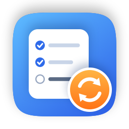

Local Tasks BridgeLocal Tasks Bridge 是一款免费开源的菜单栏 App，把你选择的提醒事项列表与 Google Tasks 双向同步。它只在你的 Mac 上运行，中间没有任何服务器。
新任务、标题和截止日期的修改、完成和删除，会在你选中的提醒事项列表与同名的 Google Tasks 列表之间双向同步。
在 Google Tasks、Gmail、Google 日历或 Gemini 里添加的任务，会出现在提醒事项、提醒事项小组件和 Siri 中。
大批量的删除或完成会先等你确认；首次同步绝不删除任何内容；同步绝不会悄悄换到别的 Google 或 Apple 账号。
登录信息、同步状态和日志都只留在你的 Mac 上。任务数据只在你的 Mac 和 Google 官方接口之间传输， 不会发给开发者。
设置向导、一眼可见的状态、立即同步、暂停，以及待确认更改的查看窗口。本地修改几秒内就会上传。
App、命令行工具和文档都提供英文与简体中文。
Apple 提醒事项⇄ Mac 上的 EventKit⇄ Local Tasks Bridge⇄ Google Tasks API
Google 无法直接读取 iCloud 提醒事项，所以这个桥接程序运行在你的 macOS 用户会话里：通过 Apple 的 EventKit 框架读写提醒事项，并用你自己的登录访问 Google Tasks API。每次同步都会先生成计划；如果计划中的 删除或完成超过安全上限，会先暂缓，直到你确认的正是这一批改动。
需要 macOS 13 Ventura 或更新版本（Apple 芯片或 Intel）、开启 iCloud 的提醒事项，以及一个 Google 账号。
curl -fsSL https://raw.githubusercontent.com/siyuanj/local-tasks-bridge/main/install.sh | bashcurl 不会使用 macOS 的系统代理。请先运行
export https_proxy=http://127.0.0.1:7890（端口以你的代理软件为准），并在 App 的登录步骤里设置同一个代理。git clone https://github.com/siyuanj/local-tasks-bridge.git && cd local-tasks-bridge && make install。首次打开时会进入设置向导：允许访问提醒事项，选择 Google 登录方式，选好列表，查看首次同步将做的改动，然后开始同步。
Local Tasks Bridge 只申请以下 Google 权限：
https://www.googleapis.com/auth/tasks —— 查看和管理你的 Google Tasks，用于同步你选择的列表；openid 和 email —— 识别这次同步属于哪个 Google 账号，并显示给你看。它不会申请 Gmail、Google 日历、Google 云端硬盘或 Google Cloud 数据的访问权限。Tasks 权限覆盖整个账号， 但 App 只读写你选择的列表。
| 登录方式 | 需要准备 | 说明 |
|---|---|---|
| 快速登录 | 无需准备，发布版已内置 | 在 App 完成 Google 验证之前，Google 可能会显示“Google 尚未验证此应用”。你的数据仍然不会经过开发者。 |
| 使用自己的 Google Cloud 客户端 | 在免费的 Google Cloud 项目中操作约 10 分钟 （教程） | 没有用户数限制，使用你自己的 API 配额。 |
Local Tasks Bridge 对从 Google API 获得的信息的使用和传输遵守 Google API 服务用户数据政策， 包括其中的 Limited Use（有限使用）要求。详情请见隐私政策。你可以随时在 myaccount.google.com/permissions 撤销授权。
问题和错误反馈：GitHub Issues。 请勿公开贴出任务内容、令牌或日志。安全问题请私下报告。